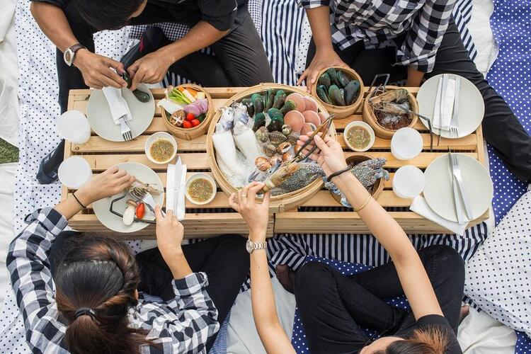

|
Food services is a general term that covers various kinds of business and activities
that involve food preparation, distribution, and consumption.
7 Styles of Food Service:
=====================================================
Plated- - A plated service means the food is carefully prepared in the kitchen and then
delivered by a server to the guests seated at a table. Sometimes people call it
"sit down service", However, "plated"; is the proper term.
=====================================================
Platter/Silver/Russian Service- - The Food being arranged specifically on a platter and brought out to tables for guests viewing.
After unveiling food, servers are responsible for serving portions onto guest plates.
Platter service is commonly associated with banquet service.
=====================================================
Gueridon/Trolley Service- - Instead of Food being Delivered to you, the trolley or gueridon service prepares and cooks your food
infront of you on the trolley while performing stunts. This style of service requires professional skills.
=====================================================
Buffet Service- - This service is a self-service dining setup where guests serve themselves from a variety of dishes displayed on a
long table. This service is popular in various settings, from casual gatherings to upscale events.
=====================================================
Tray Service- - This service places dishes on the trays and table appointments are arranged in trays
which are brought to the diner.
=====================================================
Butler Service- - This style of service serves/assists the guests by listening to their requests and if you visit some restaurants
with this service, he will be your personal assistant as long as you are there.
=====================================================

Family Service- - With this service, servers just place the food on the middle of the table and you do the rest by serving yourself.
Just like at home during dinnner with your family.
=====================================================
|